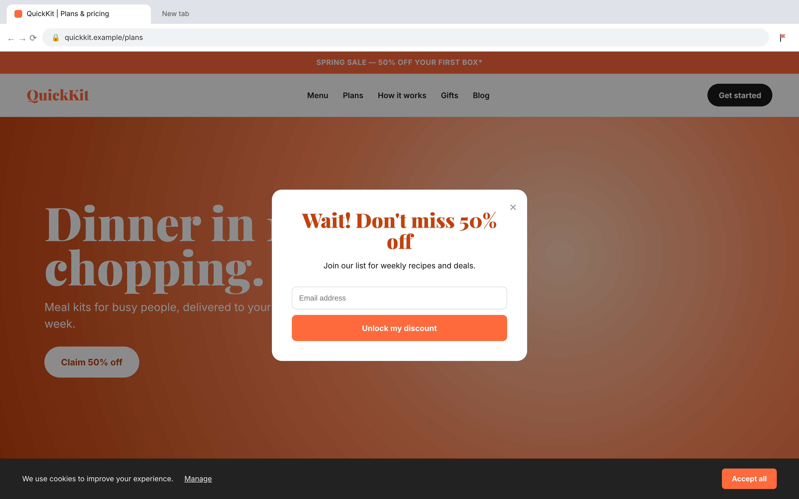
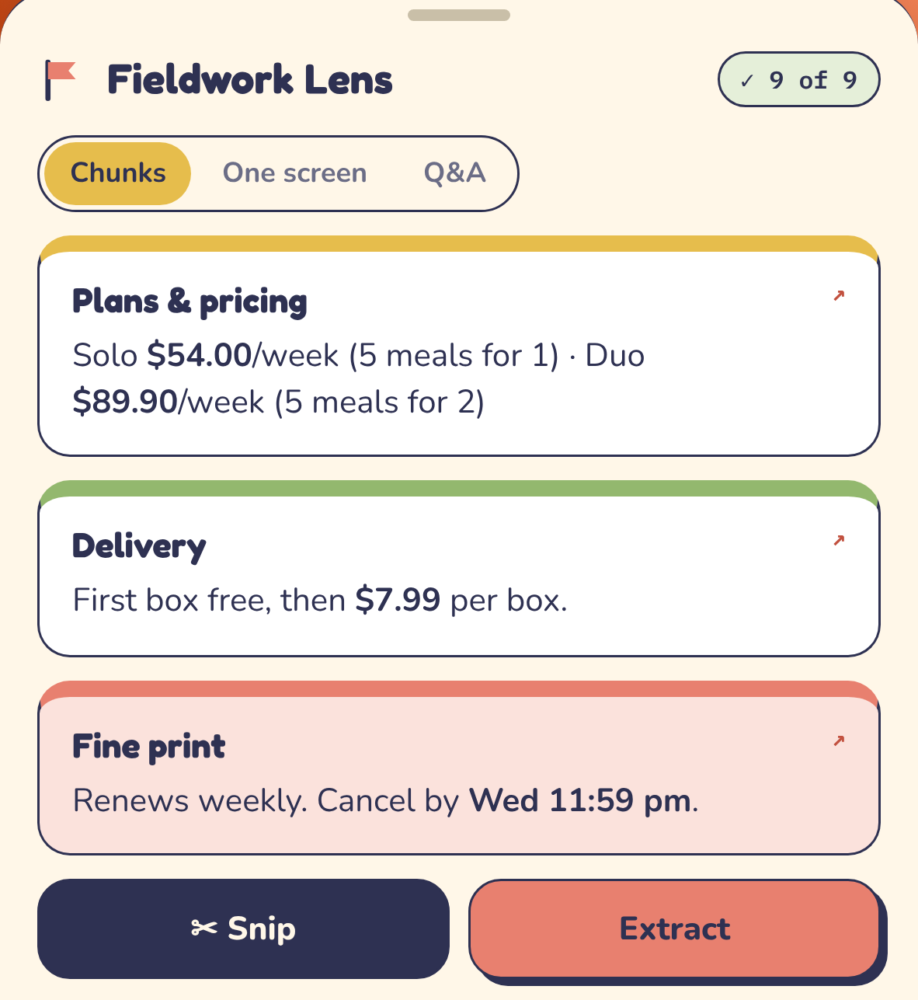
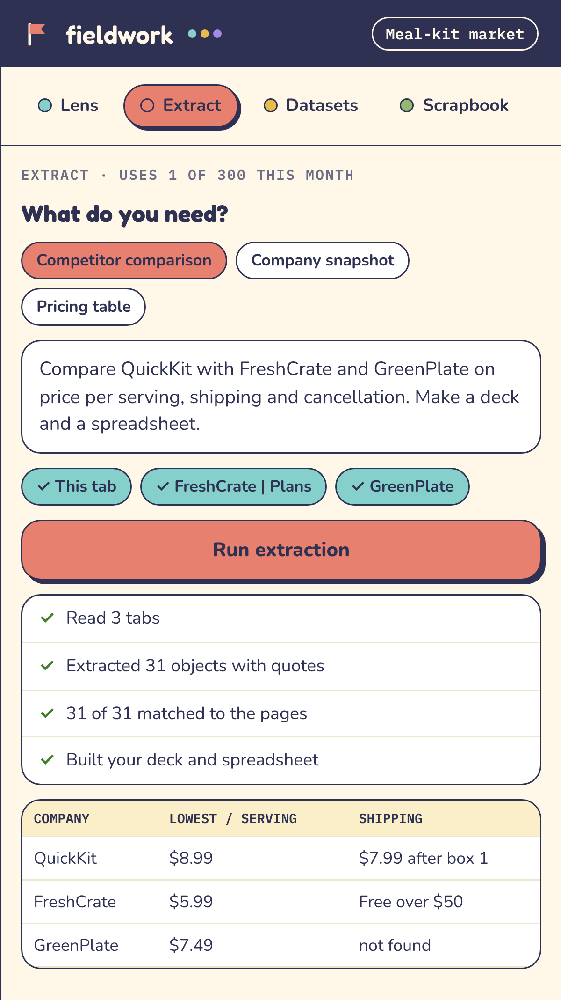
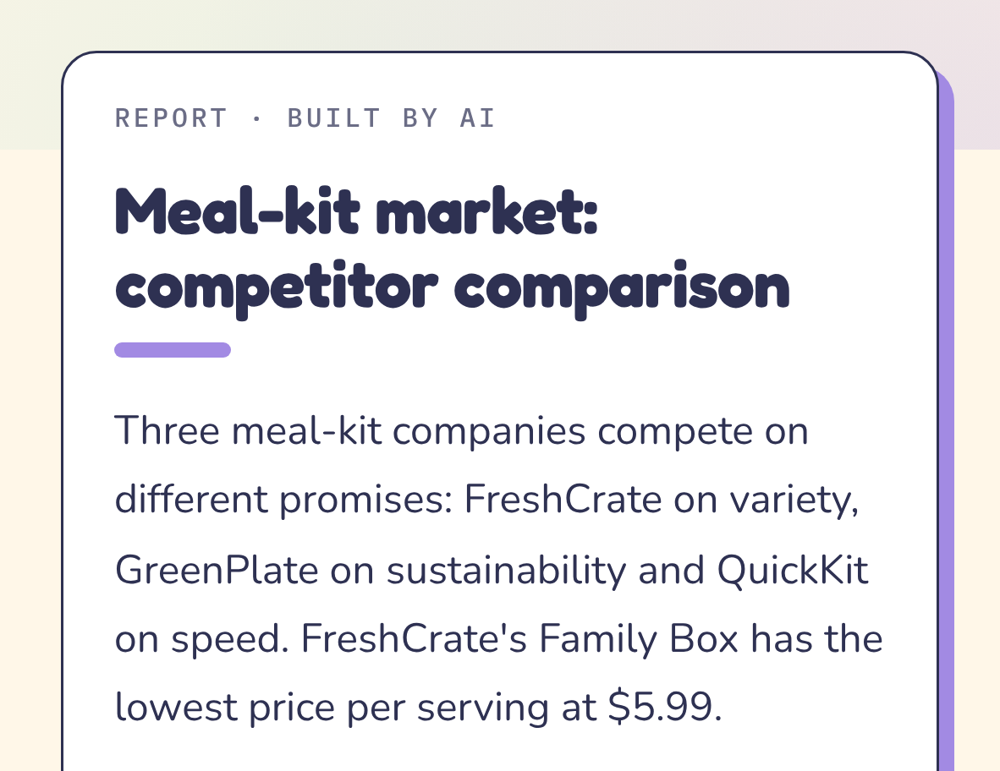

A browser extension tool that turns any web page into something you can read at a glance, then into finished, sourced work.
Pop-ups, big images, and the facts you need scattered everywhere.

Prices, fees and fine print gathered into clear chunks.

It reads your pages and builds it. Every fact is checked against its source.

A report, slide deck or spreadsheet, ready to share.
